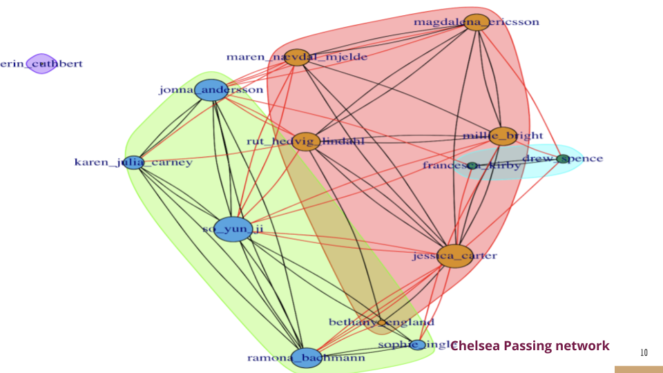

Giving Passes Due Credit: A Data-Driven Framework to Calculate Expected Goals Per Pass (xG/pass)
This is a project I did for my summer undergraduate experience in statistics at Carnegie Mellon University. This project can be extended to create a dynamic network model of the game if you’re interested in that and I am open to collaborate on that especially if you’re a undergraduate researcher.
Abstract
Finding the value of a pass is a holy grail of soccer analytics. While Expected Goals (xG) is a ubiquitous metric for measuring the quality of a shot, it primarily rewards the player taking the shot, often overlooking the crucial build-up play. Soccer is a collaborative game, and the passes leading to a shot are often as important as the shot itself. To create a more complete picture, we need to give passes their due credit.
This paper proposes a data-driven framework to calculate an “Expected Goal per Pass” (xG/pass) value, distributing the credit for a scoring opportunity across all players involved in the passing sequence.
Keywords: xG per pass, credit assignment, data driven, soccer analytics
Introduction
A pass in soccer can be evaluated in terms of its risk and reward. In this paper, we propose a data-driven methodology to assign an Expected Goal (xG) value to each pass made by a player. The framework considers the quality of the pass, the collaboration within the team, and the spatial context of where the pass was made on the pitch.
Various methods have been proposed to solve this credit assignment problem. One common approach is to simply attribute a fraction of the final shot’s xG to players who assisted. However, this method often fails to account for the quality of the individual passes and tends to over-reward forward players who are closer to the final action. Our framework aims to provide a more nuanced distribution of credit.
Dataset: StatsBomb Event Data
We used event data from StatsBomb’s open data resources. This dataset logs every event in a match, including timestamps, player actions, and locations. We focused our analysis on “pass chains”—sequences of passes within a single team’s possession.
A pass chain can originate anywhere on the field and may or may not end in a shot. When a chain does end in a shot, the entire sequence inherits the xG value of that shot.
Methods for Distributing xG
We explored several statistical methods to model the value of each pass within a chain.
1. Grid-Based Model
The most intuitive approach is to divide the pitch into a grid and calculate the average xG of all pass chains originating from each grid cell. This value is then assigned to any pass starting in that cell. We used cross-validation to determine the optimal grid size.
While simple, this model assumes all passes from a given area are equal, which ignores individual pass quality and player skill.
2. Generalized Additive Model (GAM)
To capture the non-linear relationship between pass location and its value, we used a Generalized Additive Model (GAM). This model provides a smooth estimate of xG across the entire pitch based on the precise starting coordinates of a pass.
3. Random Forest Model
Finally, we built a Random Forest model to incorporate a richer set of features beyond just location. These features included: - Pass Length and Duration: How far and how quickly the ball traveled. - Network Metrics: We constructed a passing network for each team to measure player influence. Metrics like PageRank and Betweenness Centrality were calculated for each player (node) in the network.
The model, built with 500 trees, prioritized pass location and the PageRank of the receiving player, indicating that high-value passes are those made near the opponent’s goal to influential players.

Model Comparison
We compared the models using Mean Squared Error (MSE) on a 70/30 train-test split. The Random Forest model performed the best, confirming the presence of non-linear relationships in the data.
| Model | MSE |
|---|---|
| Grid-Based Model | 0.043 |
| Generalized Additive Model | 0.0034 |
| Random Forest Model | 0.0024 |
Creating the Final xG per Pass Metric
Using the predictions from our Random Forest model, we re-normalized the values within each pass chain to create the final metric. The formula is:
\[ \textit{xG per pass}_{i} = \frac{f(\text{pass}_i)}{\sum_{j=1}^{n}f(\text{pass}_{j})} \times \textit{xG from shot} \]
where \(f(\text{pass}_i)\) is the predicted value for pass i from the model, and n is the total number of passes in the chain.
Conclusion and Future Work
This framework provides a quantitative method to credit players for their contribution to creating scoring chances. It rewards passes made closer to the opponent’s goal and those made to influential teammates. This metric can be used to rank players based on their creative passing ability.
For future work, we plan to incorporate team tactics, the positions of nearby players, and a method to penalize “bad” passes that result in a loss of possession.
Code for Analysis
The code for this project is available on GitHub: https://github.com/KapilKhanal/Soccer_CMUCamp
Acknowledgements
I would like to thank Dr. Kostas Pelechrinis of the University of Pittsburgh for helping with the project and Dr. Tisha Hooks of Winona State University for reviewing the paper. This paper is a continuation of the work I did for my summer undergraduate experience in statistics at Carnegie Mellon University.